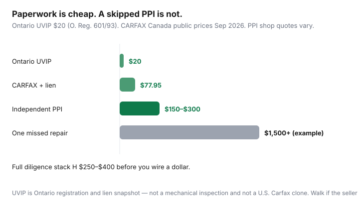

Transportation · Canada
How to buy a used car privately in Canada without getting burned: a province-aware checklist
Private-sale ads look cheap because they skip dealer overhead — and sometimes because they skip a lien discharge, a branded title, or a rusted subframe. Canadian buyers who copy U.S. checklist blogs miss Ontario’s UVIP, provincial tax-on-transfer rules, and the fact that a CARFAX Canada report is not a mechanical inspection. This is a province-aware sequence: prove the seller owns it, prove nobody else has a claim, then pay a shop you chose to look underneath.
Whether used beats new at all is TCO. Insurance on the VIN is a quote, not a guess. Used EVs do not get EVAP.
Disclosure: Vehicle history report tools and PPI shop referrals are offer types. Saving Optimizer may earn a commission if we later add partner links. We do not currently claim CARFAX, registry, or garage partnerships. This is not legal advice. Registration, tax, and lien rules are provincial — confirm the government page for the province where the car will be plated.
Key takeaways
- Match VIN on the dash/door, ownership permit, and listing. Meet the person named on the permit with photo ID. A “cousin selling for them” is a pause, not a story.
- Ontario: seller must provide a UVIP ($20) — registration history, branding, odometer, liens. Buyers can also order one. Updated ontario.ca 17 Aug 2026.
- CARFAX Canada is extra history (accidents, U.S., service), not a UVIP clone. Confirm the product includes a lien check if you buy it (~$77.95 public price with lien vs ~$58.95 history-only in Sep 2026).
- Independent PPI is non-negotiable on anything that is not a token amount. $150–$300 vs a four-figure surprise.
- Pay after paperwork, not before. Bank draft or in-branch. Then tax, safety (where required), insurance, plates — in the order your province publishes.
VIN, seller ID, and ownership verification
Before you argue about price, prove the object and the human.
- Read the VIN on the windshield and the door sticker. Compare to the listing, the ownership (Ontario’s green permit; other provinces have their own cards), and any history report.
- Ask for government photo ID that matches the name on the permit. If two names are on title, both should sign the transfer.
- Look up the plate. A car “just imported” or “plates expired, sitting at my buddy’s” needs extra registry checks, not less.
- Meet in daylight at the seller’s address or a police-station / ServiceOntario parking lot — not a random plaza at 9 p.m. with a running engine.
If the seller will not show ID or the permit, you do not have a deal. You have a story. Walk.
CARFAX Canada / lien checks—what they catch and miss
A vehicle history report can show accidents reported to participating insurers and shops, odometer readings that were recorded, salvage/rebuild branding in some databases, service visits, and U.S. history if the VIN crossed the border. It does not show every fender-bender paid in cash, every flood that was not claimed, or whether the timing chain is quiet.
Liens are a separate legal fact: someone else may still have a security interest. CARFAX Canada’s order page (reviewed Sep 2026) sold a history+lien bundle and a cheaper history-only SKU. Buy the version that searches liens in provinces where the VIN has been registered (their copy excludes NWT). Ontario’s UVIP also reports lien information from PPSA / Repair and Storage Liens searches. Use both when you can. A “clean CARFAX” without a lien search is a marketing phrase.
Recalls: check Transport Canada’s recall database by VIN. A history report that mentions recalls is a hint, not the official list.
Ontario UVIP and other provincial disclosure packages
Ontario.ca (updated 17 Aug 2026): the seller is legally required under the Highway Traffic Act to provide a UVIP when selling a used vehicle privately. It includes a description, Ontario registration history, recorded odometers, branding, tax value, and lien information. Fee: $20 (O. Reg. 601/93, s. 5). Order online with VIN or plate plus Ontario postal code, or same-day at ServiceOntario. The buyer can also buy one — useful if the seller “forgot.” OMVIC dealers follow a different regime; do not expect a UVIP from a registered dealer in the same way.
Other provinces do not copy UVIP. They have their own used-vehicle information, ICBC history, SAAQ file, or buyer-beware plus a lien search you run yourself. If you are plating in B.C., Alberta, or Québec, read that government’s “buy a used vehicle” page the morning of the deal. Do not file an Ontario UVIP in Winnipeg and call it done.

Independent pre-purchase inspection (PPI) that is non-negotiable
Pick a shop that does not sell the car. Book a PPI after the documents look clean and before money moves. Ask for compression or scan, underbody, rust (salt provinces), accident repairs, tire date codes, brake measurements, and “would you let a family member buy this.”
Seller objections:
- “My mechanic already looked” — that is not independent.
- “I don’t have time” — then you don’t have a buyer.
- “It’s sold as-is” — as-is is why you inspect, not why you skip.
A failed PPI is a price cut or a walk. Factor $200 into the purchase the way you factor HST at a dealer. EVs need a shop that can read high-voltage health, not only oil.
Bill of sale, safety, tax, and registration sequence
Ontario’s buyer package (government page): UVIP, signed bill of sale (the UVIP has a section), vehicle portion of the permit with the transfer completed, proof of insurance, your licence, then ServiceOntario. Safety Standards Certificate is required to plate many used transfers — a private seller advertising “no safety” is telling you the next bill. Retail sales tax on private sales is not dealer HST; Ontario charges tax based on purchase price or a minimum taxable value (often from the UVIP), whichever is greater. Confirm the current ServiceOntario tax rules; this article will not compute your RST.
Other provinces: ICBC transfer appointments, SAAQ, MPI — each has a sequence. Insurance in force before you drive it home is the universal line. Quote the VIN first so you are not surprised at the kiosk.
- Documents + ID + VIN match.
- History + lien (UVIP and/or CARFAX Canada lien product + provincial search).
- PPI at your shop.
- Written bill of sale: names, addresses, date, VIN, odometer, price, “as-is” if true, lien status.
- Payment, then immediately transfer/register per provincial rules, with insurance binder in hand.
Payment methods that protect both parties
Bank draft issued to the name on the permit, or an in-branch transfer where both people sit with a teller, are the boring methods that work. Some buyers and sellers meet at the seller’s bank so the draft can be verified. E-transfer to a stranger for $12,000 is how people get emptied twice. Cash for a car is a robbery plot. Gift cards and crypto are scams.
Never send a deposit to “hold” a car you have not seen. Never pay extra to a shipping agent who emailed from a generic Gmail. If the price is thousands below book and they need you to move fast, it is not your lucky day.
Walk-away red flags
- VIN mismatch, painted-over VIN, or “I lost the permit.”
- Seller not on title; pressure to use a different name on the bill of sale.
- Open lien they will “pay off next week.” Discharge first, or pay the lienholder directly with documented payout.
- Salvage/rebuild branding you did not price as a rebuild. Insurance may refuse or rate it as a different animal.
- Odometer that jumped; cluster that does not match wear.
- No PPI, no UVIP (Ontario), no daylight meeting.
- Test drive only with a “mechanic friend” in the back seat who is clearly the real seller.
A used car can still be the cheaper TCO. The savings disappear if you inherit someone else’s loan or a rusted strut tower. Spend $250 on paper and a lift. Then decide.
Sources & date stamps
- Ontario.ca, Used vehicle information package — seller duty, $20 fee, what it contains. Updated 17 Aug 2026. Reviewed 20 Sep 2026.
- Ontario.ca, Buy or sell a used vehicle — bill of sale, permit transfer, buyer registration list.
- O. Reg. 601/93 — UVIP definition and $20 fee.
- CARFAX Canada order page — public prices for history vs history+lien (Sep 2026). Lien search coverage notes (excl. NWT in their copy).
Frequently asked questions
What is an Ontario UVIP and who pays for it?
A Used Vehicle Information Package is Ontario’s official snapshot of registration history, branding, odometer records, and lien information. The private seller is legally required to provide it (Highway Traffic Act). The fee is $20 (O. Reg. 601/93). Buyers can also purchase one at ServiceOntario. Dealerships have different rules.
Is CARFAX Canada the same as a UVIP?
No. UVIP is Ontario government registration and PPSA/lien information. CARFAX Canada is a commercial history report (accidents, service, U.S. history). A history report without a lien search is incomplete. Public CARFAX Canada prices in Sep 2026 included about $58.95 for history and $77.95 with lien check — confirm carfax.ca.
Can I skip a pre-purchase inspection?
You can. You should not. A UVIP and a CARFAX do not look at the underbody. An independent PPI often costs $150–$300. One missed repair can be $1,500. Walk if the seller blocks a shop you choose.
How should I pay a private seller?
Bank draft or in-branch transfer at a meeting both parties can live with, after paperwork and PPI. Avoid gift cards, crypto, cash in a parking lot at night, and e-transfers to a name that does not match the ownership. This is not legal advice.
Does EVAP apply to a used EV?
No. Some provinces (Québec, Manitoba) have had used-EV provincial amounts. Federal EVAP is new vehicles only.